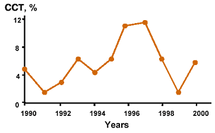

9th International Cochrane Colloquium
9-13 October, 2001, Palais des Congres, Lyon, France
Poster # P-079
Handsearching of randomized controlled trials in Russian urological Journals
V. Rafalsky, I. Andreeva, E. Riabkova, A. Faraschuk
Institute of Antimicrobial Chemotherapy, State Medical Academy, Smolensk, Russia
 The PDF format poster (241 kb)
The PDF format poster (241 kb)
BACKGROUND
The identification of non-English-language trials is important to reduce the impact of the foreign language bias, one the main sources of selection bias in meta-analyses. Obviously the identification of clinical trial by medical database such as Medline and Embase is the most optimal decision.
Unfortunately only few Russian medical journals are cited in Medline. Moreover it is impossible to identify design and quality of publication when we use Russian national medical database OPAC-R because there are no keyword determinating the type of clinical trial in this database.
In this connection only handsearch seems to be the more applicable way to identify randomized control trials or controlled trials in Russian medical journals.
OBJECTIVE
To find randomized controlled trials (RCT), controlled trials (CCT), systematic reviews, meta-analysis and to evaluate the structure of publications in Russian urological journals.
METHODS
Russian urological journals «Urology and nephrology» for 1990-1998 and «Urology» for 1999-2000 were handsearched for systematic reviews, metaanalises, randomized clinical trials (RCT) and controlled clinical trials (CCT) according to «Cochrane hand search manual». Handsearch was carried out by four trained handsearchers as a part of collaboration with Cochrane Renal Group. The definition of studies as RCT or CCT was strictly based on «The Cochrane Collaboration Handbook» (1998).
RESULTS
Totally 1230 articles in Russian urological journals for 1990-2000 were scanned. No metaanalises and systematic reviews, 1 RCT (0,08%), 70 CCT (5,7%) were found. Proportion of CCT increased from 1991 (1,8%) up to 1997 (11,3%) while in 1998-2000 decreasing of CCT number was observed with the lowest rate in 1999 (1,8%). RCT publication was found in 1990 issue. The distribution of CCT through the studied period is shown on the Fig 1.
Fig. 1. The distribution of CCT through the studied period

DISCUSSION
For 11 years the proportion of high-level evidence-based publications in Russian urological journals was extremely low. There were no metaanalises, systematic reviews and only 1 RCT. Moreover the decreasing of CCT number for 3 past years was noticed. We compare obtained results with «The Journal of Urology» (USA) where the proportion of meta-analysis and RCT in total publications in 2000 was 0,3% and 2,3%, respectively vs 0% and 0,08% according to our findings for the whole studied period (about 10 years).
We suppose these results reflect the current status of the EBM in Russia.
CONCLUSION
The proportion of high-level evidence-based publications (RCT and metaanalises) in the leading Russian urological journal is very low.
It is undoubtedly that continuing of hand searching in Russian journals is of great importance as it provides to reveal more RCT and CCT and subsequently use them both for the renovation of Cochrane resources and preparing the systematic reviews.
RCT publications concerning urology may be found in earlier (prior to 1990) issues of Russian urological journals or in other medical journals.
It is worth to mention that preparing the search and the handsearch itself provide the better realization of EBM principles and the spread of Cochrane methods among the scientists.